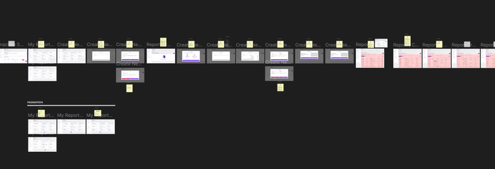
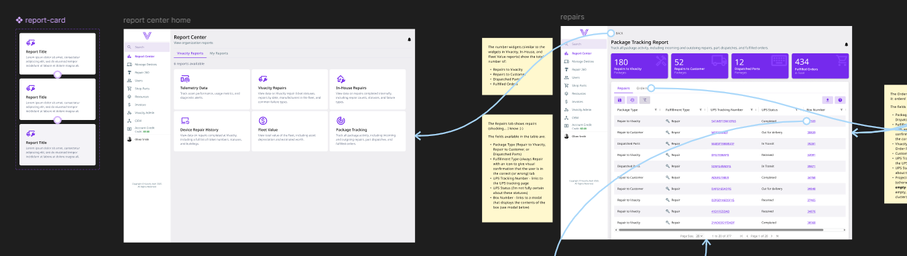

Context & Collaboration.
Design Within Constraints.
This app was part of a medium-size platform without a true design system. A full redesign wasn't feasible, so
I focused on incremental improvements, making layouts cleaner, reducing clutter, and
improving flow without distrupting development timelines. Because I worked closely with product and
engineering, I learned how to adjust design expectations to fit technical limitations while still advocating
for and improving
user experience.
Cross-Team Communication.
I ran bi-weekly design meetings with the product owner, developers, and QA to align on
priorities, confirm feasibility, and make sure design intent translated correctly into development. These
sessions became a key space for feedback and planning, ensuring design was part of every product discussion.
When collaborating with other departments, like marketing and leadership, I helped communicate how UX
decisions tied into business goals and customer satisfaction.
Design Execution & Documentation.
Improving Usability Through Structure.
As the app grew larger, one of the biggest pain points was navigation complexity. After a
UX/UI workshop with the product owner and company CEO, I redesigned the layout by decluttering the left
sidebar, moving lower-priority pages to a top navigation bar, and simplifying the overall information
hierarchy. Additionally, I introduced chips, card components, and more variety of charts to give data more
visual meaning, reducing cognitive load for users who frequenty managed hundreds (or thousands) of assets at
once.
Design Documentation for Clarity.
With frequent releases and tight deadlines, I began placing design documentation directly in
Figma, explaining design reasoning, usage rules, and fallback recommendations for when features
couldn't be fully implemented. This helped developers make informed choices and reduced miscommunication when
deadline-influenced decisions had to be made during development.

Impact & Takeaways.
Empowering Development Through Design.
Over time, design became a trust part of the process rather an afterthought. Developers and other teammates
often said they could hand me a project brief and I'd return with something that made the problem
instantly visible and solvable. The clarity of prototypes improved cross-team understanding,
allowing new features to be scoped and built faster.
Incremental Improvements That Scaled.
While not all the UI was flashy, it became far more functional. By improving structure and documentation, I
helped the team reduce confusion, visualize ideas (and possible constraints) sooner, and keep development
aligned with UX intent. Incremental design improvements added up to a smoother user experience and a more
maintainable product, proving that thoughful design decisions can make a significant impact even under
real-world constraints.

Explore the Case Studies
Designing for Dream™ meant balancing user needs, technical limits, and business goals, often under tight
deadlines. These case studies dive deeper into that process, showing how I solved usability challenges,
collaborated with developers, and turned feedback into practical, real-world design improvements.